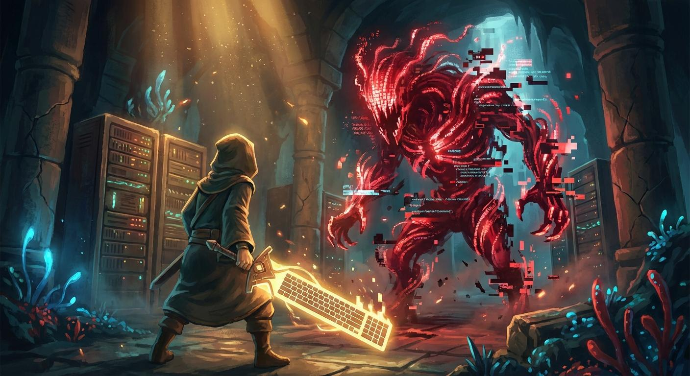
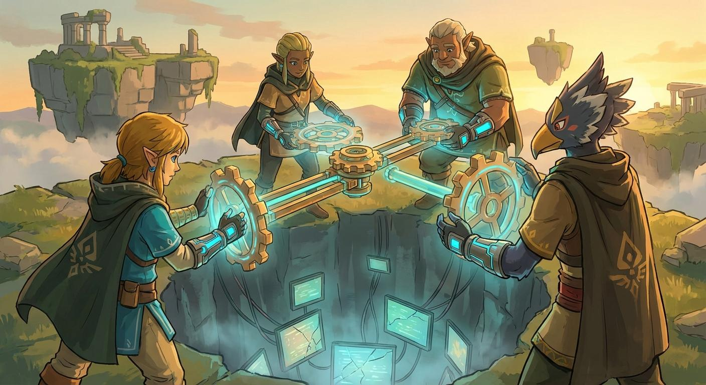
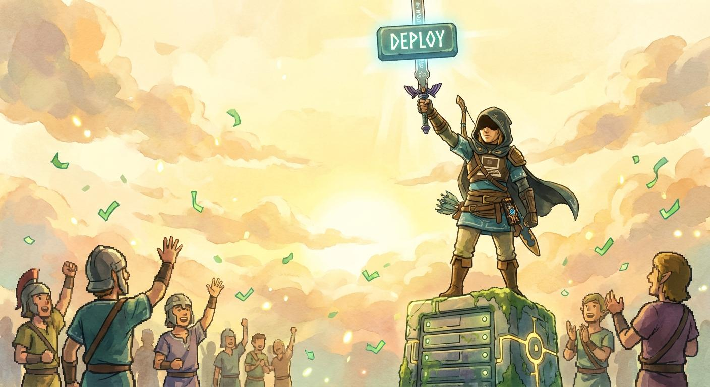

在代码王国的边境，有一个叫林柯的年轻程序员。他不是什么天才，只是一个普通的后端开发——每天写CRUD，改bug，被产品经理追着问"这个需求今天能上线吗"。
直到有一天，王国的核心系统「创世引擎」崩溃了。
没有人知道原因。高级架构师们摇头，说"这个系统太老了，重构至少要半年"。而国王——也就是CEO——只给了七天。
所有人都选择了沉默。只有林柯站了出来。不是因为勇敢，而是因为——这个系统里有他写的第一行代码。他不想看着它死。

系统的最深层，是一片混沌。红色的错误日志像藤蔓一样缠绕着每一个模块，数据流在不该流的地方流动，内存像被什么东西吞噬了一样不断消失。
林柯独自面对着那个巨大的Bug Boss——一个由无数历史遗留bug叠加而成的怪物。它没有固定形态，每次你以为修好了，它就从另一个地方冒出来。
林柯连续debug了48小时。咖啡喝了12杯。眼睛充血，手指在键盘上发抖。第三天凌晨，他终于看到了Bug Boss的核心——一个三年前没人敢动的并发锁。
但修这个，意味着要重写整个调度层。一个人，四天。不可能的。

第四天早上，林柯发现自己不是一个人。
前端工程师小鱼来了——"我把监控面板改了，现在你能实时看到每个模块的状态。"
测试工程师老张来了——"我连夜写了自动化回归用例，你改完我秒测。"
就连平时最烦人的产品经理阿May也来了——"发布会的演示我来改，你只需要保证后台不崩就行。需求我全砍了，只留核心功能。"
四个人，四天四夜。他们用「究极手」的方式——把现有的模块拆开，重新拼装，用最巧妙的方式绕过了那个三年的并发锁，同时不破坏任何已有功能。

第七天，早上6:47。
林柯的手指悬在「Deploy」按钮上方。屏幕上，所有测试用例全绿。监控面板一片宁静。
他按了下去。
系统加载……10%……50%……100%。
创世引擎，重新启动。
小鱼趴在桌上睡着了，笔记本还亮着。老张的烟灰缸满了。阿May的头发乱得像鸟窝。而林柯看着窗外的日出，眼眶湿了。
这杯咖啡，我请。永远的那种。
而是在最难的时候，发现身边的人
也在为同一件事拼命。